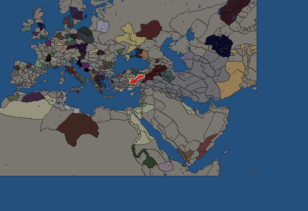
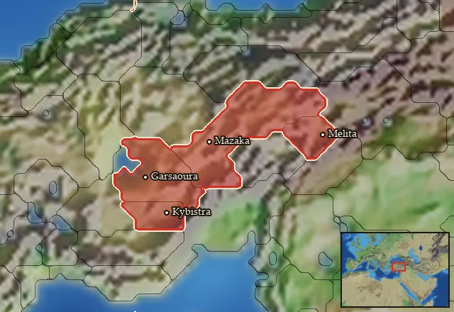

RTR: Imperium Surrectum
RTR: Imperium SurrectumCappadocia


- difficulty Medium
- Iranian culture
- believes
 Iranian
Iranian - 2 settlements
- capital Mazaka
- 10,000 manpower
- 3 characters
- 20 faction units
- 432 regional units
The campaign brief
"Although the district of Mazaka is in many respects not naturally suitable for habitation, the kings seem to have preferred it, because of all places in the country this was nearest to the centre of the region (…) And as for their security in general, both that of themselves and of their slaves, they got it from the defences in their strongholds, of which there are many, some belonging to the king and others to their friends." – Strabo, XII.2.9
The blade felt cold on his neck. The sharp edge cutting into the skin, causing a thin strip of blood to show underneath. As he was held down on his knees by two guards, the ambassador tried his best to compose himself, his vast experience from years of service to one or another of the Macedonian kings being his aide. In front of him, the noble men of Kappadokia were seated to each side of their lord, Ariaramnes. On his right sat the priest of Ma from the temple at Komana, the second most powerful man and his cousin; next to him followed the priest of Zeus Dakieos and next to him the priest of the Venasian Zeus. On the lord’s left were his mother; next to her, his wife and his young son, Ariarathes. The other nobles of the realm were mere spectators of this scene, forced to stand in the presence of the nobler ones…
The lord’s face was unmoving, as he uttered through his thin lips: "What kind of a man is your king, ambassador?" He slowly rose to his feet, starting towards the Greek. Upon the slightest motion of their lord, who still towered over the others with his tall shoulders, the guards hoisted the captive. As Ariaramnes walked past them, the guards ushered the ambassador behind him, while his family and the other nobles of the realm arose and began to follow in a procession leading out of the building.
There, the temple complex opened into a large enclosure, the Pyraitheia, in which midst stands the altar where the sacred fire is kept burning for eternity. The Magoi, called Pyraithoi by the locals, stood at the foot of the altar, wearing high turbans of felt, which reached down over their cheeks far enough to cover their lips. Reciting incantations and holding their bundle of rods before the fire, they begun the sacred ritual of sacrifice.
The lord motioned to the ambassador to step forward, as the sacrifice commenced: the sacrificial animal was beaten to death in front of the spectators, as is the custom in Kappadokia. The fire, indeed, is sacred and cannot be stained by mortal flesh… "You Greeks call us barbaroi because of who we are. Yet, was it not you who invaded our lands 52 summers ago, and took our king – my grandfather – captive, then killed him like a common criminal?"
His eyes remained fixated on the sacrifice until the last breath of the victim was extinguished from its body. He continued in a soft voice: "And now your new king, Antiochos, asks for my aid. Should we forgive the injustice done to our family?"
The sacrifice finally over, the lord turned his gaze towards the captive at last. "Our land is our home. And I am the shepherd of my people, by the mandate of our lord Ahura Mazda. And it is in truth and honour that noble men should ever conduct themselves, which you Greeks never seemed to grasp." Ariaramnes then turned back to the ceremony and for a brief while the ambassador was left there standing in silence. All the time, the nobles and the lord's family had seemingly never left their positions, presenting a perfect harmony, which certainly did not escape the eyes of the experienced diplomat. "Go now, Andreas, return to your king and ask him my question. Let it be known that at least we never punish the undeserving …"
As the ambassador left the courtyard, on his way to report back to his king, the lord of Kappadokia lifted his eyes to the sky and wondered which path he should take: to be true to the oath he gave to the Seleucid king, or to be true to his own people and land…
Starting settlements
Cappadocia begins with 2 settlements and 10,000 manpower.
| Settlement | Region | Size | Manpower | Already built | Settlement | Region | Size | Manpower | Already built |
|---|---|---|---|---|---|---|---|---|---|
| Mazaka (capital) | Kappadokia | large town | 5,000 | 11 buildings | Garsaoura | Garsaouritis | large town | 5,000 | 11 buildings |
What is already built in each settlement
Mazaka, in Kappadokia: Small Treasury, Governor's Villa, Wooden Palisade, Homeland, Region Information Scroll, Roads, Local Barter, Grape Orchards (Rural), Irrigation Ditches (Crops), Basic Armoury, Cisterns (Sanitation)
Garsaoura, in Garsaouritis: Small Treasury, Governor's Villa, Wooden Palisade, Homeland, Region Information Scroll, Roads, Local Barter, Grape Orchards (Rural), Irrigation Ditches (Crops), Basic Armoury, Cisterns (Sanitation)
Starting diplomacy
Allied with (1):  Seleucid Empire
Seleucid Empire
Trade agreements with (1):  Seleucid Empire
Seleucid Empire
At peace with every other faction.
Like every faction, it is also at war with the  Free Peoples, who hold every settlement no faction does.
Free Peoples, who hold every settlement no faction does.
Homeland
Cappadocia's homeland is 4 regions. Only there can it install the Homeland government (more on homelands).

Starting characters
| Name | Role | Age | Name | Role | Age | Name | Role | Age | |||
|---|---|---|---|---|---|---|---|---|---|---|---|
| Ariaramnes | General | 58 | Ariobarzanes | General | 29 | Holophernes | General | 35 |
Faction mechanics
From the game's own guide. See also the other game guides.
Special Mechanics
Cappadocia has a mercenary centre in Mazaka, check its Region Information Building for more details.
Military reforms
Cappadocia reforms 1 requirements: Fight 10 battles against Hellenistic or Greek factions.
Unlocks: Cappadocian Thureophoroi
Cappadocia reforms 2 requirements: 50 turns pass + take at least 5 settlements
Unlocks: Cappadocian Heavy Skirmisher Cavalry
Cappadocia reforms 3 requirements: Fight 50 battles
Unlocks: Cappadocian Cataphracts; Cappadocian Noble Cavalry; Cappadocian Bodyguards (late)
Reforms
For every faction: Military innovations have arrived!, Second wave of military innovations have arrived!.
Units you can recruit
The same as in the main campaign.